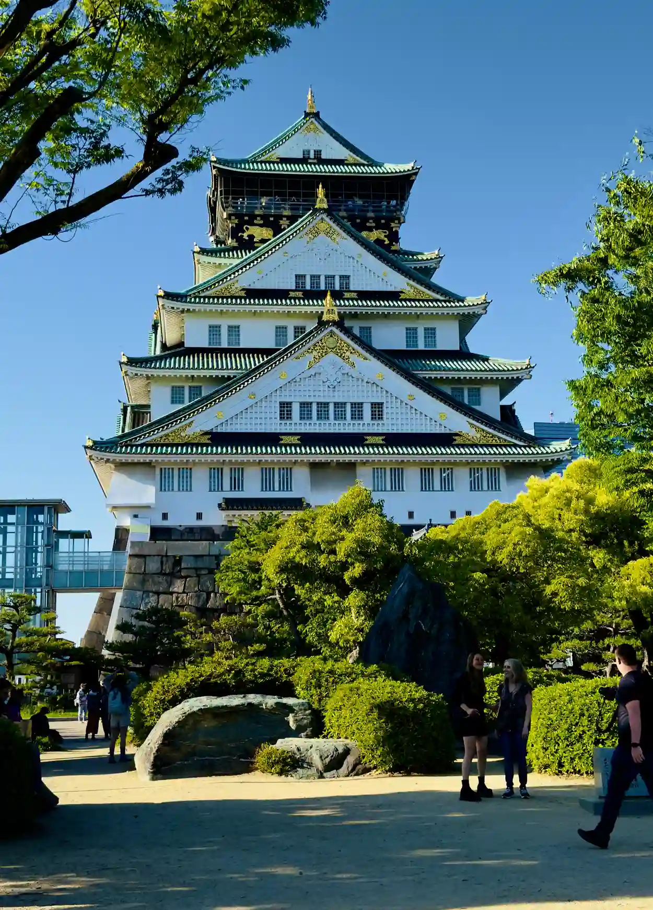
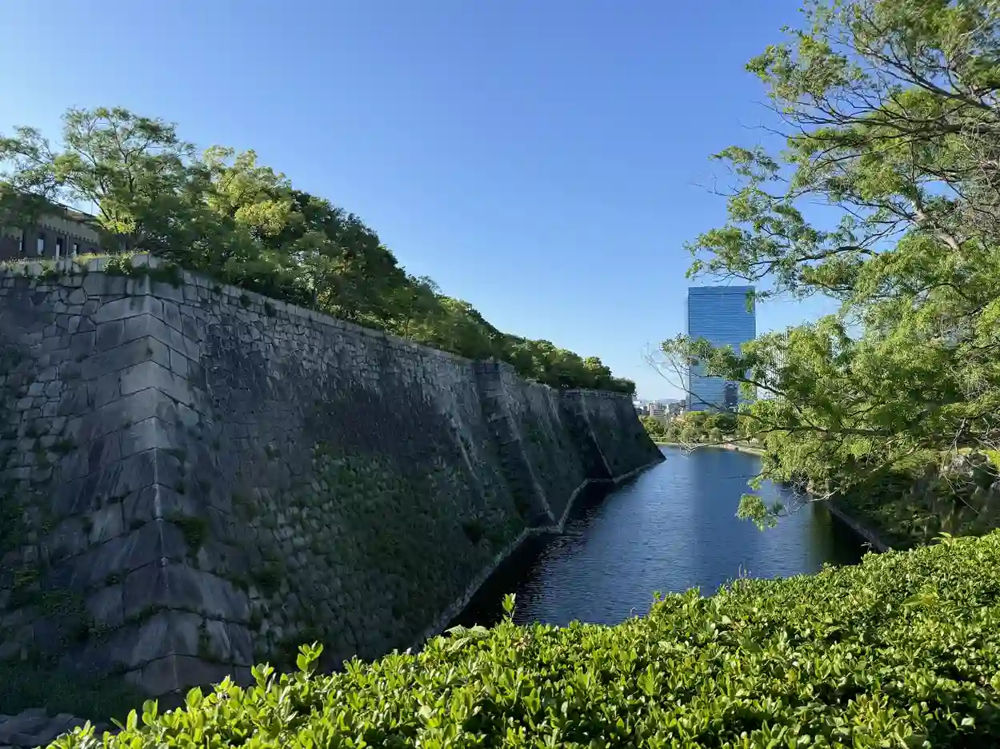

(撰寫中)大阪、東京八日遊｜2024 旅行
終於等到白血病治療告一段落，該是時候來執行我在生病期間所列的代辦清單，因此有了這次的日本旅行。這次跟公司請了八天的假出去玩。現在去日本比以前 (上次去是 20 年前事了) 方便多了，而且還有智慧型手機的協助，原則上自由行完全不是問題~
DAY1 24/05/09 (晴)
(早上) 出發~
獨自一個人出發，之後再跟家人、朋友會和~


(下午) 大阪城
首先來到大阪城，不過因為忘記計算時差的問題，所以守天閣沒辦法進去，只能在附近亂逛，不過剛好大阪城有舉辦手工餃子的活動，所以就買了一堆餃子 XDD。
 
(晚上) 通天閣
往上住的地方是在通天閣商店街裡面~


DAY2 24/05/10 (晴)
(整天) 環球影城
第二天大約六點左右就起床，出發到環球影城，我們有買提早入園券，所以一開始就鎖定馬力歐世界，馬力歐賽車的 XR 效果做得非常好，建議可以體驗看看。


 名偵探柯南的 4D 電影，3D 效果不錯，但是 4D 的部分只有一小段，感覺有點可惜。其內容有類似舞台秀加上 3D 的內容呈現，滿特別的。
名偵探柯南的 4D 電影，3D 效果不錯，但是 4D 的部分只有一小段，感覺有點可惜。其內容有類似舞台秀加上 3D 的內容呈現，滿特別的。

這邊有許多小遊戲攤販(需要額外付費)，意外在玩香蕉卡巴那(丟香蕉的小遊戲)，結果不小心投進，拿到一個超大的娃娃，只不過要帶回來有點小麻煩 XD，當初玩的時候沒有考慮到這件事情。此外個人推小小兵瘋狂乘車遊，體驗感真的不錯~


此外，個人不太推薦在通天閣附近的唐吉訶德(新世界店)，那家店的空氣流通很差，逛一逛很容易頭暈。

DAY3 24/05/11 (晴)
第三天前往京都~早上大約 10 點出發到稻荷神社
(早上) 京都_稻荷神社
 意外看到「吉伊卡哇 MOGUMOGU 本舖」，裡面有一些伏見稻荷的限定商品~
意外看到「吉伊卡哇 MOGUMOGU 本舖」，裡面有一些伏見稻荷的限定商品~


逛完以後，差不多時間在 1 點多，午餐就去附近有名的土井活鰻吃鰻魚飯，運氣很好沒有排到隊。


(下午) 京都_清水寺附近
下午前往清水寺~


(晚上) 阿倍野300展望台


DAY4 24/05/12 (雨)
(早上) 黑門市場


(下午、晚上) 心齋橋


DAY5 24/05/13 (雨)
(早上) 搭飛機前往東京


(下午) 淺草


(晚上) 晴空塔觀景台


DAY6 24/05/14 (晴)
(早上) 大石公園


(下午) 忍野八海


(下午) 御殿場


(晚上) 涉谷


DAY7 24/05/15 (晴)
(早上) 豐洲市場


(下午) Teamlab


(下午) 科學未來館


(晚上) 秋葉原


DAY8 24/05/16 (晴)
(早上) 唐吉訶德、一蘭拉麵


(下午) 搭機返回台灣


本部落格所有文章除特別聲明外，均採用 CC BY-NC-SA 4.0 許可協議。轉載請註明來自 Michaelpig's blog！
評論